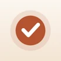

Just
One Step.
When starting is the hard part.
A visual assistant that turns a space full of things into one small, concrete action.
A small start
is still a start.
is still a start.
ONE STEP↗
Do just thisPut the grey jacket
on the back seat.
One thing at a time.Illustrative app view